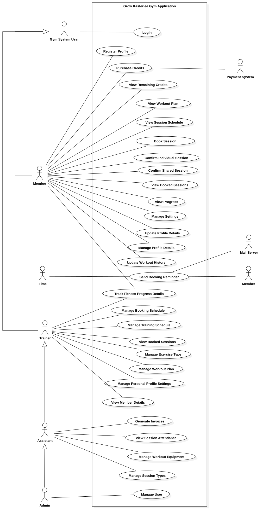
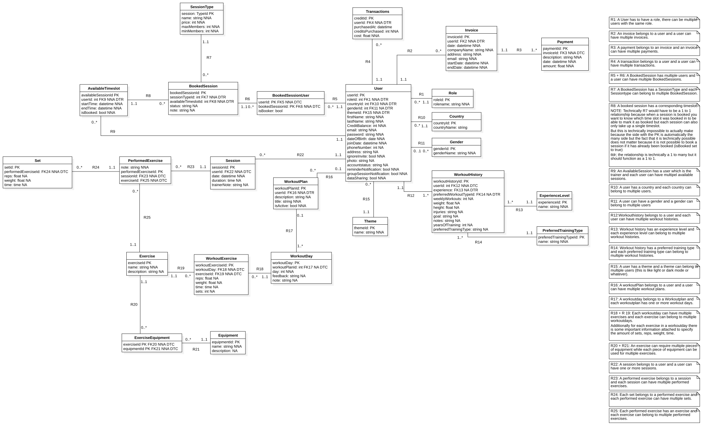

What I Learned - Hard Skills
- Requirements Engineering & System Analysis
- Database Design & Data Modeling (ERD)
- UML Diagramming (Use Case Scenarios)
- Project Prioritization (MoSCoW framework)
SKIL2 Semester 1
Team-based analysis and design project focused on requirements, user interaction models, and scalable data architecture.
This project was developed during SKIL2 Semester 1. Working as a team (Team KLA2), our objective was to design a comprehensive digital solution to modernize the operations of Grow Kasterlee Gym. The goal was to focus on the software engineering process: analyzing business needs, defining user interactions, and designing a scalable data architecture for members, trainers, and administrative staff.
We delivered a complete User Requirements Specification document. This extensive blueprint included:
Key Diagrams: Use Case and ERD overviews.

Open Full Size
Open Full SizeI collaborated with five other students in Team KLA2. While we shared the analysis workload, my specific focus was on designing the Entity-Relationship Diagram and defining the database relationships.
Back to Projects